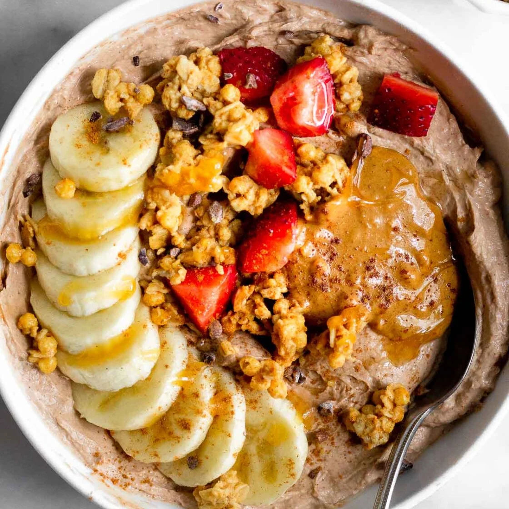

The Protein Yoghurt

Protein yogurt bowl recipe makes an easy and healthy breakfast or snack! You only need a few ingredients and 5 minutes to make a healthy yogurt bowl packed with protein, healthy fat, and carbs. Top with toppings of choice!
Ingredients
- Yoghurt
- Protein powder
- Peanut butter
- Toppings of your choice!
Steps:
- Put youghurt in a bowl
- Add protein powder and peanut butter, then mix them up
- Add toppings of your choice
Return to main page